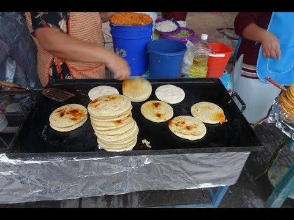
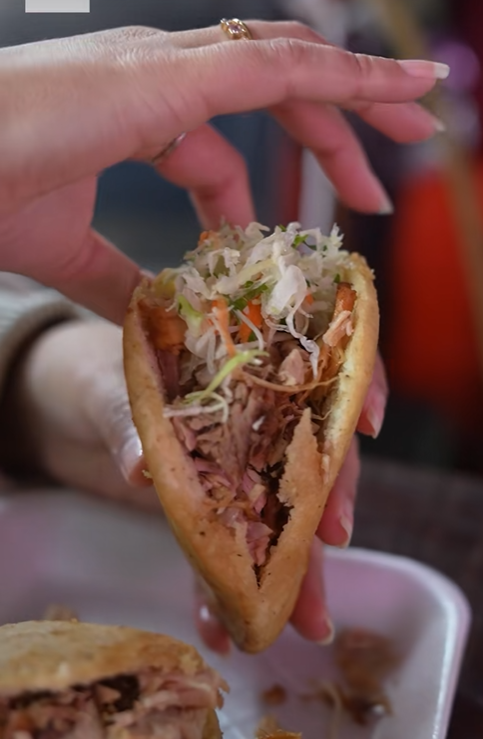
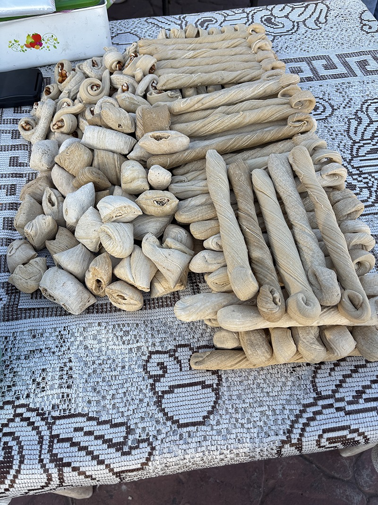
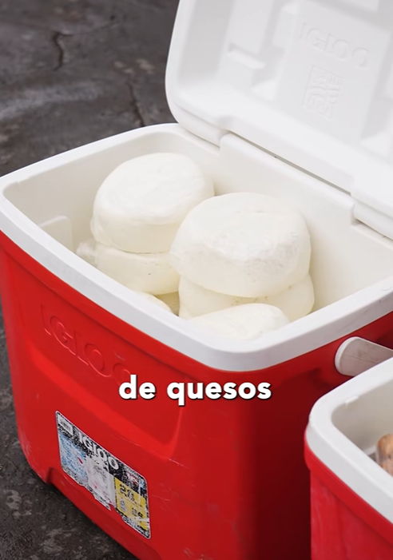
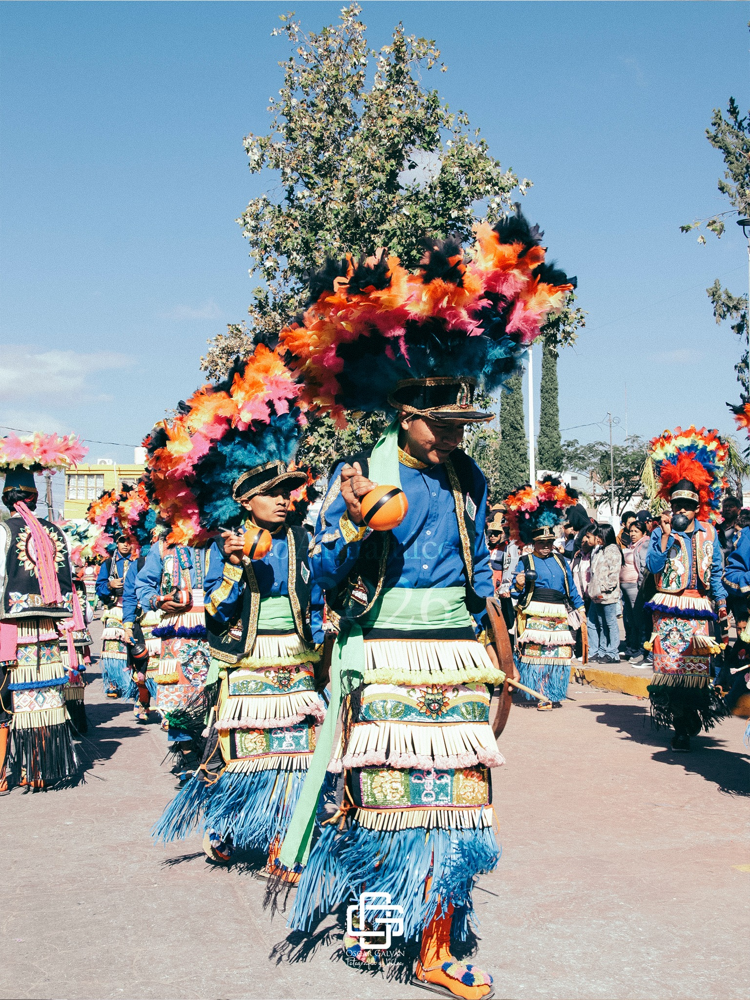
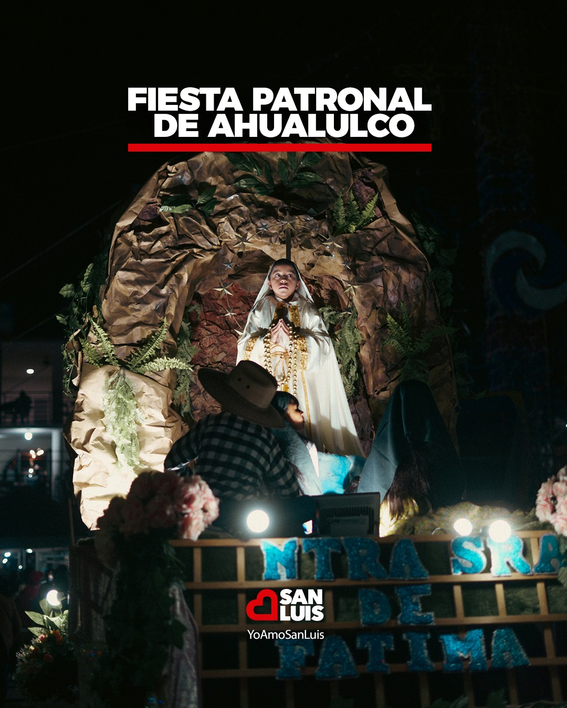
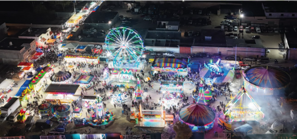
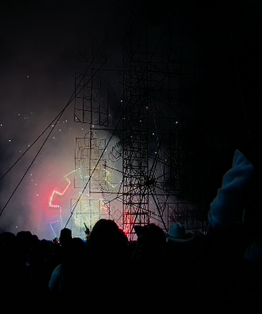
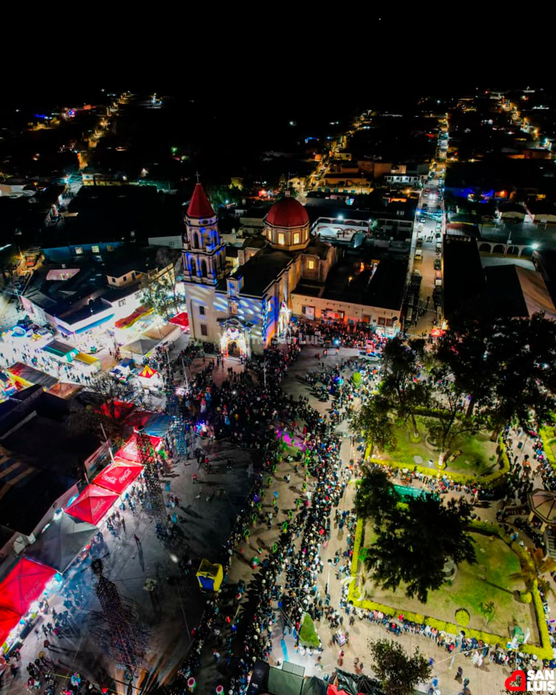

Una tradición que nos une
En Ahualulco, San Luis Potosí, se celebra a la Virgen de la Candelaria el día 2 de febrero.
Sin embargo, la fiesta comienza días antes. Las calles se llenan de puestos,
música, visitantes y un ambiente lleno de tradición.
En mi familia todos nos organizamos para ir. Algunos llegamos antes,
otros después, pero siempre nos reunimos en la casa de allá.
Es un momento muy especial porque convivimos, recordamos
y fortalecemos nuestros lazos familiares.
Las mañanas de fiesta
Desde las 6:00 de la mañana suenan las campanas y los cuetes,
anunciando que el día ha comenzado. Nos despertamos y salimos
a buscar desayuno: gorditas, jugo de naranja, tamales y atole.
Gastronomía tradicional




Durante el día buscamos qué comer: enchiladas potosinas,
gorditas, carnitas, nopales, barbacoa, dulces típicos y quesos artesanales.
El pueblo se llena de sabores y aromas tradicionales.
La Cera y el Desfile
Aproximadamente a las 6:30 de la tarde comienza la “cera”.
Primero pasan los matachines y danzantes tradicionales,
después la Virgen acompañada de personas cargando velas,
seguida por los carros alegóricos.


Juegos, Banda y Pólvora
Antes de la pólvora, mis primas y yo subimos a la unidad deportiva,
donde están los juegos mecánicos. Después bajamos a la plaza
donde alrededor de las 10:00 de la noche comienza el encendido
de toritos, castillos y muchos cuetes.



A esa hora también hay grupos de banda tocando tanto en la plaza
como en la unidad deportiva, llenando el ambiente de música,
tradición y alegría.